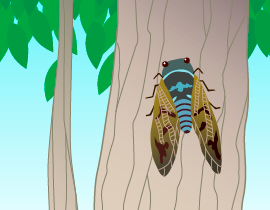

2016年8月号
「蝉（セミ）」が鳴く理由をご存知ですか？

蝉が合唱する最盛期を迎えましたが、昔に比べ最近は蝉の声がめっきり少なくなったような？と感じているのは私だけでしょうか。
蝉の声を聞くと、夏がやってきた！と誰もが実感できますが、その反面、朝早くから「ミーンミンミンミー」と蝉の大合唱で、もう少し寝ていたかったのに起こされてしまった、という季節が到来したともいえます。
でもどうして蝉の声ってあんなに勢いがあるのか（うるさい？）と思いませんか！？
その理由は、「子孫繁栄」で、オス（雄）の蝉が自分のいる場所を知らせるため、つまり「求愛行動」として鳴いているのです。ということで鳴いている蝉はオスだけです。
蝉は長年、土の中で過ごし、やっと地上に出ることができても寿命が短いことから、思い切り大きな声を出して自分の存在感をメスにアピールして子孫繁栄しています。
大きな声で鳴くオスにはメスが寄ってくる、声が小さいとメスは寄ってこない、という自然界の現実が鳴き声の大きさにはあるのです。
この季節の風物詩として聞こえてくる蝉の声ですが、「蝉、がんばれ〜！！」と応援する気持ちを持つことで、夏の楽しみ方が1つ増えるかも知れませんよ？！